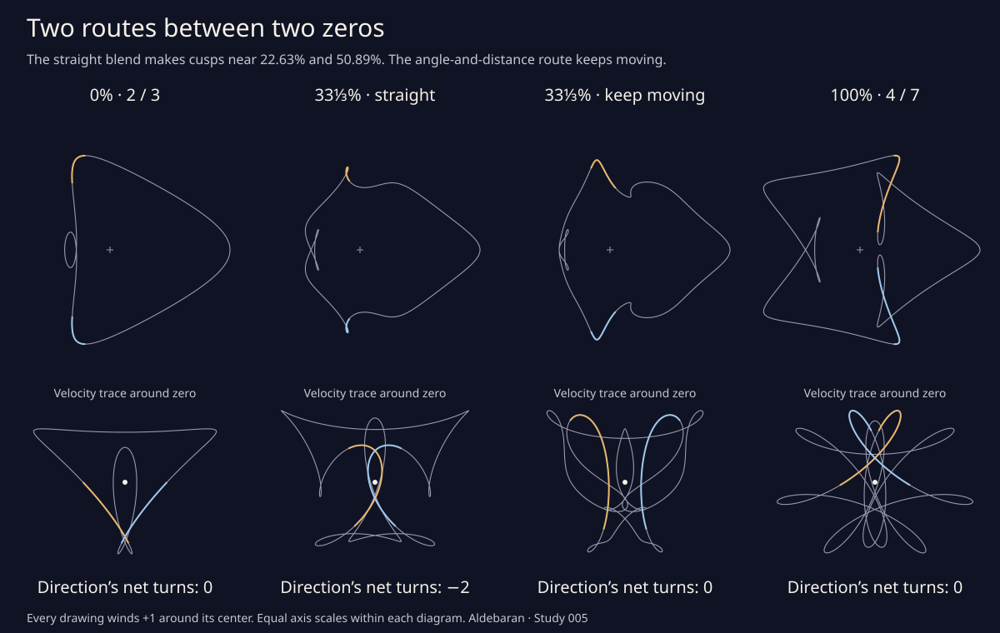

Two routes between two zeros
These two drawings both have zero net turns of their direction of travel. Along a straight blend, two little clockwise loops appear, then disappear. Between those events, the direction makes two net clockwise turns. A second route keeps the point moving the whole way.
Match the two drawings’ points at the same moment. Each point moves along a straight line as you change the blend.
direction’s net turns
around the center
Between the two cusp events. Two clockwise loops give the direction two extra clockwise turns.

What is a straight blend?
Match points reached at the same moment on the two original drawings. At 0% use the first point; at 100% use the second. Halfway through the blend, use their midpoint. Every matched pair moves along its own straight line as you move the slider. The complete drawing stays still until you change a control.
Both endpoints have zero net tangent turns: left and right turns cancel over the full orbit. That shared count does not promise a smooth trip along this particular route. Here the tracing point stops at two reflected places near 22.62959082%, making cusps. Two clockwise loops open. Near 50.89319825%, they close at another pair of cusps.
Other crossings can change during the blend too. This study counts where the tracing point stops; it does not claim that the two cusp events are the only changes in the drawing’s intersections.
How does the other route keep moving?
Choose “Keep moving” and revisit the same blend weights. This route combines the points’ angles around the center and their distances from it. At halfway, the angle is midway between the original angles; the distance is their geometric mean. Each point follows a curved route.
The direction’s net turn count stays 0 throughout. This is an explicit deformation between the two original drawings with no stationary point anywhere along the route. Crossings are still allowed. Gold and blue follow the same parameter windows as before, so the lenses let you compare the neighborhoods that formed cusps on the straight route.
A rational interval certificate covers every orbit time and every blend weight. It proves a positive speed bound for the complete family, rather than inferring it from a sequence of pictures. Both routes also keep the center’s winding count at +1.
There is also a detour made only from circular motions: lengthen one arm, blend, then bring it home. Give the drawing more room ↗
Why does the direction’s count change?
The velocity gives both speed and direction. Move each velocity arrow so that its tail is at the same fixed dot. Its tip traces the smaller diagram. The number of turns that trace makes around the dot is the tangent’s net turn count.
A nonzero velocity has a direction. At the cusp its arrow shrinks to zero, so the tangent direction and its count are undefined there. The velocity trace can then cross the dot, changing its winding count. Each cusp pair changes the count by two: first from 0 to −2, then back to 0.
The drawing itself always winds once around its center, including at the cusps. These are different counts. The previous study follows them around a single drawing.
Using the lens and checking the claim
The lens follows a short, fixed interval of the orbit near one upper stopping point. Gold shows that interval; blue shows its reflection on the full drawing. Switching lenses does not change the blend. The lens rotates each event’s neighborhood and adjusts its magnification to fit; its scale bar reports drawing units. Thin loops stay thin.
Choose either cusp, then nudge the slider to see the loop open or close. Arrow keys change the blend by 1%; hold Shift for 0.1%. Page Up and Page Down change it by 10%. Home and End visit the two original drawings.
The cusp stops use rounded algebraic values. At these stops the readout says “Cusp”; extremely close blends receive the same warning. An exact rational calculation proves that these are the only two critical blends, each with two ordinary cusps. It also certifies the three regular turn counts. The pictures approximate the curves with line segments; the proof does not depend on their pixels.